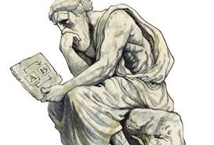
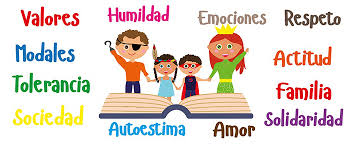

Preguntas esenciales de la filosofía de la conducta
¿Qué motiva a una persona a actuar bien o mal?
¿Hasta qué punto somos responsables de nuestras acciones?
¿Cómo influyen los valores en la toma de decisiones?
¿Cuál es la diferencia entre conducta y moralidad?
Enfoques principales de la filosofía de la conducta
Ética normativa
Examina qué conductas son correctas o incorrectas, buscando establecer normas universales.
Metaética
Estudia el significado y la naturaleza de los juicios morales y las palabras relacionadas con la conducta.
Ética aplicada
Analiza problemas concretos de la vida diaria, como la ética profesional o la bioética.
Psicología moral
Explora cómo las personas desarrollan juicios morales y cómo la sociedad los influencia.
Relación con otras disciplinas
La filosofía de la conducta también se relaciona con la sociología, la psicología, la antropología y la pedagogía, ya que el comportamiento humano es un fenómeno complejo influido por múltiples factores.
¿Cuáles son los valores morales?
Los valores morales son principios, normas o cualidades que las personas consideran deseables y que guían su comportamiento dentro de una sociedad. Son fundamentales para la convivencia armónica y para el desarrollo personal y social.
¿Por qué son importantes los valores morales?
Guían la conducta
Nos ayudan a distinguir entre lo correcto y lo incorrecto.
Promueven la convivencia
Fomentan el respeto, la solidaridad y la paz social.
Forjan el carácter
Contribuyen a formar personas íntegras y responsables.
Sirven de referencia
Orientan las decisiones y las relaciones con los demás.
¿Cómo se adquieren los valores morales?
Los valores morales no son innatos, se adquieren a través de la educación, la cultura, la familia y la experiencia personal. Aunque varían entre culturas, algunos son universales, como el respeto, la honestidad y la justicia.
Los 20 valores morales esenciales
1. Respeto
Reconocer la dignidad de todas las personas, aceptar sus diferencias y tratarlas con consideración.
2. Honestidad
Decir la verdad, actuar con sinceridad y no engañar a los demás.
3. Responsabilidad
Cumplir con las obligaciones y asumir las consecuencias de las propias acciones.
4. Justicia
Obrar de manera equitativa y dar a cada quien lo que le corresponde.
5. Solidaridad
Apoyar y ayudar a los demás, especialmente en momentos de necesidad.
6. Lealtad
Ser fiel a las personas, instituciones o principios en los que se cree.
7. Tolerancia
Aceptar las ideas, opiniones y costumbres diferentes a las propias.
8. Humildad
Reconocer las propias limitaciones y actuar sin arrogancia.
9. Perseverancia
Mantenerse firme en los propósitos a pesar de las dificultades.
10. Generosidad
Compartir sin esperar nada a cambio.
11. Empatía
Ponerse en el lugar del otro para comprender sus sentimientos y necesidades.
12. Gratitud
Agradecer los favores y gestos recibidos.
13. Paciencia
Saber esperar y mantener la calma frente a la adversidad.
14. Compromiso
Cumplir con las promesas y obligaciones adquiridas.
15. Amor
Sentir afecto sincero hacia los demás y actuar con bondad.
16. Bondad
Hacer el bien y procurar el bienestar de los otros.
17. Prudencia
Actuar con cautela y sensatez, reflexionando antes de decidir.
18. Equidad
Tratar a todos con imparcialidad y sin favoritismos.
19. Autocontrol
Dominar los impulsos y emociones negativas.
20. Integridad
Mantener la coherencia entre lo que se piensa, se dice y se hace.